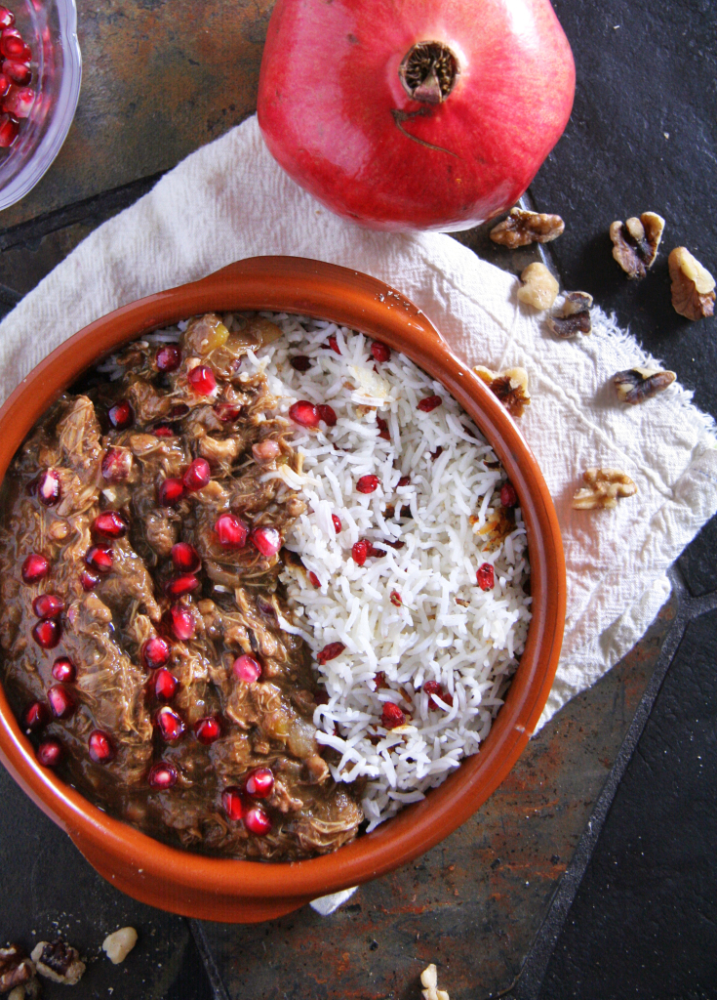

Khoreshte Fesenjoon
INGREDIENTS
- pound walnut pieces (about 4 cups)
- 6 to 8 bone-in chicken thighs (about 2 1/4 pounds)
- 1 teaspoon ground turmeric
- Fine sea salt and freshly ground black pepper
- 1 yellow onion, thinly sliced
- 4 cups cold-pressed pomegranate juice
- ¼ cup good-quality pomegranate molasses, plus more as needed
- ¼ teaspoon crumbled saffron threads
- 1 to 2 teaspoons granulated sugar (optional)
- Pomegranate seeds, for garnish
- 3 cup Rice

INSTRUCTIONS
- Heat oven to 350 degrees. Spread walnuts out on a baking sheet and toast until golden brown inside, about 12 minutes. Set aside to cool to room temperature.
- Remove chicken skin and discard or save for another use. In a large bowl, season the chicken with turmeric, 2 teaspoons salt and 1/2 teaspoon pepper. Set aside.
- Set a large Dutch oven or similar pot over medium-high heat. When the pot is hot, add oil and carefully lay chicken thighs into the pot in a single layer. It is crucial to leave space between the pieces to allow steam to escape, so brown chicken in batches if necessary. Cook until browned on both sides, flipping halfway through, 3 to 4 minutes per side. Remove chicken from pot and set aside. Add onion to pot with a pinch of salt and cook, stirring regularly, until soft and golden brown, 16 to 18 minutes.
- In a food processor, grind the cooled walnuts as finely as possible without turning them into a paste. (Alternatively, you can chop the walnuts as finely as possible by hand.) Add 2 cups pomegranate juice and 1/4 cup molasses to the walnuts and continue blending until you have a very smooth paste.
- Add the walnut paste and remaining pomegranate juice to the pot. Season with salt and partly cover with a lid. Cook over low heat, stirring frequently, for about 2 hours. If the sauce begins to stick, stir in 1/4 cup water. The sauce will thicken and change color as it cooks, turning a deep, dark brown, similar to mole poblano.
- Add the saffron, and taste the sauce. Adjust seasoning with salt, pepper and pomegranate molasses as needed. The sauce should be delightfully sweet and sour, so add up to 2 teaspoons sugar, if needed, if it’s too tart.
- Add the chicken to the sauce and simmer, uncovered, for 45 minutes, or until chicken is falling off the bone. Keep stirring regularly — the sauce should be thick, but not so thick that it sticks to the bottom of the pot, so add a splash of water as needed to prevent burning. Use a large spoon to skim away any walnut oil that has pooled on top of the stew. Taste and adjust seasoning, transfer to a serving dish and garnish with a sprinkling of fresh pomegranate seeds. Serve hot, with Persian rice, mast-o khiar and salad-e Shirazi if you like.